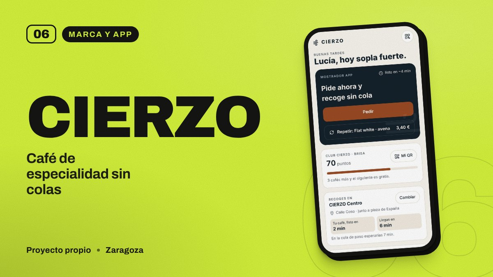

CIERZO: café para cafeteros. Sin colas.
Marca de café de especialidad para llevar en Zaragoza, creada desde cero. Se pide desde el móvil, se recoge sin cola en el mostrador app o en un punto partner, y cada pedido suma puntos en el Club CIERZO.
- Tipo
- Marca propia · omnicanal
- Mi papel
- Estrategia, público, propuesta de valor, app y lanzamiento
- Canales
- Tienda, app, Instagram, TikTok, LinkedIn y podcast
- Presupuesto de lanzamiento
- 10.000 € repartidos en un trimestre
La app de la fase 1.
Cada pantalla resuelve un paso del embudo (los microfunnels MF del plan), desde el registro con un 20 % de bienvenida hasta el aviso de “tu pedido está listo”.
Desliza → · clic para ampliar
en el primer pedido, solo pagando en la app
por café y 5 por bollería; con 100 puntos, café gratis
Brisa y Cierzo, con catas y ediciones exóticas
de recogida en Zaragoza: tienda y partners
La estrategia.
Conveniencia primero
Pedir sin colas y recoger donde te venga bien. El buen café se da por hecho; lo que fideliza es el tiempo que ahorras.
20–35 años, estudia y trabaja
Activo en redes y siempre con prisa: quiere un café bueno sin perder tiempo en la cola.
1Fase 1
Takeaway + app: pre-pedido sin colas y Club de puntos
2Fase 2
Venta de grano: ecommerce dentro de la propia app
3Después
Cafeteras propias y servicio a oficinas